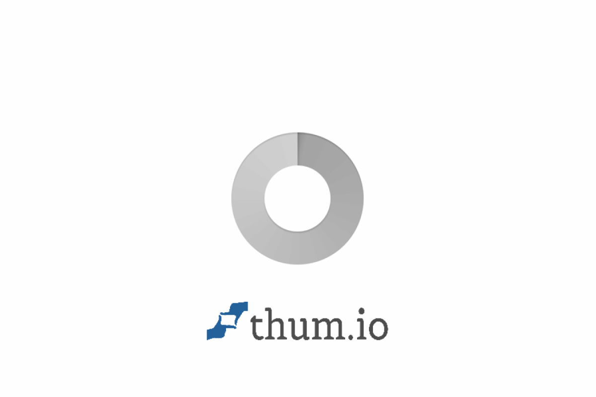

Highly motivated Information Systems Management undergraduate with a CGPA of 3.59 and Dean's List recipient. Skilled in web development, database management, information analytics, UX design, and systems analysis. Completed 41 credit hours with distinction-level grades in Advanced Database (A) and Advanced Web Design (A).
Where Information Systems meets hands-on development — building practical solutions that matter.
I'm Muhammad Haziq, and my passion for organizing and digitizing information began during my Diploma in Information Management (IM110) at UiTM. There, I built a strong foundation in records management, information organization, and archival administration.
Driven by a desire to build the technical tools that manage data, I am currently pursuing a Bachelor of Information Science (Hons.) in Information Systems Management (CDIM262) at UiTM Machang, Kelantan. This degree bridges my background in information management with hands-on technical skills, allowing me to master system analysis, full-stack web development, and database architecture.
Previously, I completed my industrial training at Perpustakaan Tun Abdul Razak (PTAR), UiTM Shah Alam, where I managed both digital and physical records across multiple departments. Today, as a CDIM262 student, I combine my deep understanding of information workflows with modern development skills to design, build, and troubleshoot practical digital solutions.
Trained in information systems, process improvement & data governance
Frontend, Backend & Database — I build from end to end
Skilled in technical documentation & digital archive management
Experienced in collaborative academic & client projects
Bachelor of Information Science (Hons.) Information Systems Management
Universiti Teknologi MARA (UiTM), Machang, Kelantan
3.59 / 4.00
Sungai Buloh, Selangor, Malaysia
Bahasa Melayu (Fluent) · English (Professional) · Mandarin (Basic)
A curated selection of real-world and academic projects showcasing end-to-end development and design capabilities.

Client ProjectFull-stack business management system built for a real local t-shirt printing business. Features product catalog, order management, CRUD operations with MySQL, and a clean admin dashboard. Applied SDLC methodology from requirement gathering to deployment.
A university fine management web system that allows students to view, manage, and pay outstanding fines online. Designed with a clean dashboard interface, admin panel for staff, and integrated database for real-time fine records tracking.
An internship management portal for students and supervisors to track daily logs, tasks, and progress throughout the industrial training period. Features role-based access, submission tracking, and report generation for efficient internship management.
A gamified FamilyMart loyalty & quest system web app that rewards customers for purchases. Features an interactive quest board, point collection, level-up mechanics, and reward redemption — applying gamification principles studied in academic coursework.
A premium café website and digital menu system for Sogno Coffee. Showcases the menu, brand story, and location with a modern, elegant design. Built with smooth animations and a warm aesthetic that reflects the café's artisanal identity.
An interactive recipe sharing platform where food enthusiasts can discover, read, and learn how to cook various meals. Developed with an aesthetic food-centric layout, featuring categorized recipes and a clean, user-friendly interface.
A comprehensive skillset spanning development, data analytics, systems analysis, database, UX design, and infrastructure — backed by strong academic grades.
My academic journey in Information Systems Management at Malaysia's leading technical university.
Pursuing a comprehensive degree bridging information systems with practical technology implementation. GPA progression: Part 3 (3.53) → Part 4 (3.65) showing upward trend.
Coursework Completed:
Built a strong foundation across information management, IT fundamentals, records management, programming, and multimedia — preparing for advanced studies in Information Systems.
Coursework Completed:
Completed 8-week practical training under supervision of Puan Nurul Aida Noor Azizi (Senior Librarian, Talent Development Unit). Rotated across all major departments including Digital Library, University Archives, Research Support, Customer Service, and Corporate & Collaboration divisions. Developed the PTAR Portal for Independence Day 2024 as a special project.
Training Activities:
Completed secondary education with strong academic results. Developed early interest in information technology and digital systems.
Academic recognition, leadership roles, and extracurricular involvement that shaped my professional growth.
2 Consecutive Semesters
Represented university at national level
Recognised for outstanding leadership qualities
PTAR, UiTM Shah Alam
Greenos Color GuardLine Club
Outreach Program Project
UTM Segamat
Kelantan
Kedah
Interested in hiring me for an internship or want to discuss a collaboration? I'd love to hear from you.
I'm actively seeking a 24-week internship placement starting 1 September 2026. Whether you need a web developer, a systems analyst, or someone who can bridge both worlds — I'm ready to contribute and learn.